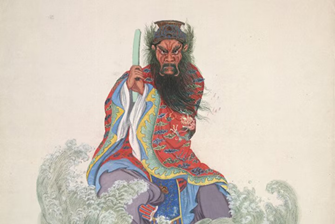

Dragon King
The Dragon King (translating to Longwang in Mandarin, or sometimes Longshen, meaning “Dragon God”) is a symbol of good luck. He rules over the oceans, weather, and all other dragons, ferociously protecting his subjects. He holds an important position among the other Gods, being so powerful. Being the king of dragons, he is most often depicted in his dragon form, though he also has a human form. His dragon form consists of a serpentine body with red scales and sharp horn, typical of Chinese dragons and signifying his ferocity.
Being the ruler of oceans, he has his dedicated temples close to the coast. He is celebrated on his birthday, the thirteenth day of the sixth month, with sacrifices and parades, though he is often prayed to during times of draught or otherwise poor weather.